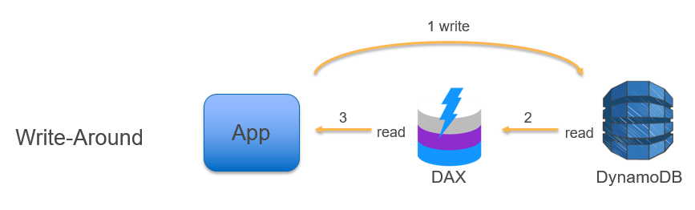

Cache Strategies with
Node.js + Redis
Icaro Caldeira Carreira / @icarcal
Icaro Caldeira Carreira
Ferramentas
Cache
Definição
Área de memória onde é mantida uma cópia temporária de dados armazenados em um meio de acesso mais lento, com o objetivo de acelerar a recuperação dos dados.
Existem tipos de cache
- CDN (arquivos estáticos)
- Aplicação (respostas, sessão, queries)
- Local storage
O que utilizar no backend
Redis
Definição
É uma ferramenta open source que faz armazenamento de estruturas de dados em memória, e pode ser utilizado como banco de dados, cache e message broker
Características
- Chave-valor
- Transações
- Pub / Sub
- Execução de scripts em Lua
- TTL
- Remove chaves antigas para entrada de novas
- Failover (Cluster)
Tipos de estruturas
- Strings
- Hashes
- Lists
- Sets
- Bitmaps
- Hyperloglogs
- Índices geoespaciais
- Streams
Porque é tão rãpido?
Trabalha com os dados na memória, não persiste os mesmos em disco
Dependendo do caso de uso, esses dados também podem ser persistidosExemplo
$ redis-cli
$ set hello world
OK
$ get hello
"world"
$ del hello
(integer) 1
$ get hello
(nil)Estratégias de cache
Cache-Aside (Lazy Loading)

Write-Through Cache

Write-Around

Write-Back

Demo
Caso de uso
Referências
https://hackernoon.com/a-cache-is-fast-enhancing-our-api-with-redis-bd61d13c3ca8
https://redislabs.com/ebook/part-1-getting-started/chapter-2-anatomy-of-a-redis-web-application/2-4-database-row-caching/
https://www.compose.com/articles/api-caching-with-redis-and-nodejs/
https://d0.awsstatic.com/whitepapers/Database/database-caching-strategies-using-redis.pdf
https://codeahoy.com/2017/08/11/caching-strategies-and-how-to-choose-the-right-one/
Questões?